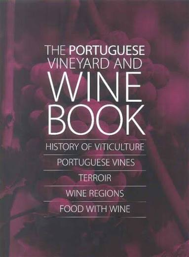

Seleção clonal
Das vinhas velhas escolhem-se e multiplicam-se as cepas mais sãs e expressivas.
Família Böhm
A árvore genealógica da família Böhm remonta ao Palatinado. Ao centro está Wachenheim, na Rota do Vinho alemã, pintada com o ano de 1579 e rodeada pelos brasões da família e pelos seus antepassados.
A árvore faz parte da “Crónica da família de Friedrich e Emilie Böhm e seus descendentes”, editada por Jorge Böhm para a família em 2013.
Ler a crónica da família Comendador Hans Jörg Böhm Dorina Lindemann


Fundador do Plansel Group
Investigador da videira, comerciante de vinhos e fundador dos Viveiros Plansel. A sua seleção clonal marca ainda hoje grande parte das vinhas de Portugal.
«Portugal precisa da sua própria investigação, para não ficar dependente de castas que não se adaptam ao seu solo e clima.»
Percurso
Comendador Jorge (Hans Jörg) Böhm, nascido em 1938 em Neustadt an der Weinstraße, vem de uma família alemã de comerciantes de vinho. Em 1961 o seu veleiro encalhou perto de Cascais, e apaixonou-se por Portugal. Já em 1969 a empresa familiar, sob a sua direção, era o maior importador de vinhos portugueses na Alemanha.
Depois de estudar melhoramento de videiras em Geisenheim, fundou a Viveiros Plansel em 1981 e iniciou a primeira seleção clonal sistemática de castas portuguesas, com a Universidade de Évora e o atual INIAV. Mais de 30 projetos de investigação depois, os clones Plansel são reconhecidos na Califórnia, Nova Zelândia e Austrália, e grande parte das vinhas de Portugal assenta em videiras Plansel, comercializadas pela Viveiros Plansel e pela Vinverus.
Em 2006 o Presidente da República Portuguesa nomeou-o Comendador de Mérito Agrícola.
Nasce em Neustadt an der Weinstraße, numa família alemã de comerciantes de vinho.
O veleiro de Jorge Böhm naufraga no porto de Cascais. Fica, conhece o país e vê o potencial das castas alentejanas.
Sob a sua direção, a empresa familiar torna-se o maior importador de vinhos portugueses na Alemanha.
Compra os primeiros terrenos perto de Montemor-o-Novo. Daí nasce o viveiro Viveiros Plansel.
Fundação dos Viveiros Plansel e início da primeira seleção clonal sistemática de castas portuguesas.
Com Paulo Laureano nasce o primeiro vinho na Adega Experimental da Universidade de Évora. O nome: Plansel, de «Plantas Seleccionadas».
Comendador de Mérito Agrícola, nomeado pelo Presidente da República
É publicado O Grande Livro das Castas, distinguido em 2010 com o Prémio OIV.
Melhor técnico de viticultura, Revista de Vinhos
Placa de honra da Universidade de Évora
Medalha de honra da Academia das Ciências de Lisboa
Novo livro: Livro Branco das Castas Vitícolas.
Investigação
Das vinhas velhas escolhem-se e multiplicam-se as cepas mais sãs e expressivas.
Videiras que precisam de menos fitofármacos. Böhm considera esta a tarefa mais importante do setor.
Material vegetal para verões mais quentes e menos água, testado no Alentejo.
Castas portuguesas quase esquecidas são redescobertas e testadas em vinho.

A geração seguinte
Dorina estudou Enologia na Universidade de Geisenheim. Em 1997 fundou a adega da Quinta da Plansel nas terras do pai, em Montemor-o-Novo; em 1999 nasceu o seu primeiro vinho premium com nome próprio, com 2.000 garrafas. Hoje dirige a Quinta como CEO, com as filhas Júlia e Luísa.
Dá aulas na Universidade de Geisenheim sobre castas, clima e regiões de Portugal e é provadora oficial do Mundus Vini. Os seus vinhos foram premiados no Mundus Vini, no Decanter e no IWC.
Livros




Por enquanto, a Wikipédia só tem artigos em português e alemão. Esta página resume a sua vida em sete línguas.
Contactos
Para questões sobre castas, clones, investigação e os seus livros.